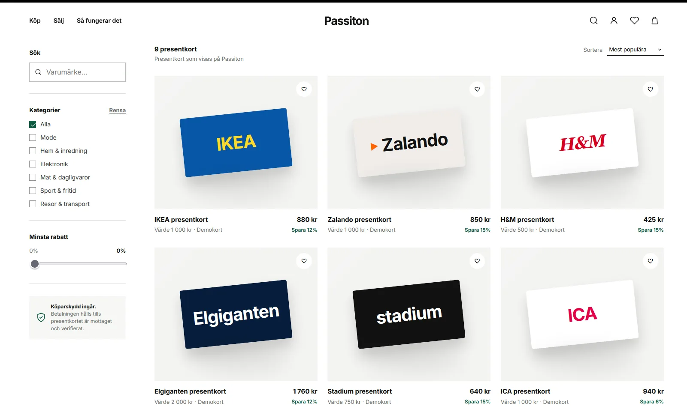
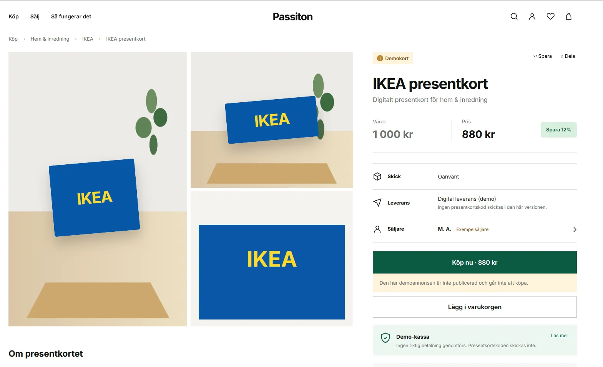

01 / DISCOVERY
Let the numbers do the selling.
Shoppers can filter by brand, category and discount, then compare a card's face value with its asking price. On the detail page, expiry and where the card can be used sit close to the purchase action.
The goal was to make the deal legible without asking someone to calculate the saving or hunt for the conditions.

